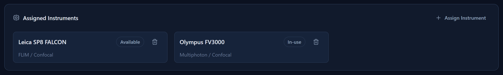

Chapter 7
Instruments
Every microscope, sequencer, or piece of equipment your facility offers gets an entry here — including how it's billed.
What you'll be able to do
- Add an instrument, including its cost and how that cost is billed.
- Understand the difference between billing "per time" and billing "per unit."
- Track an instrument's operational status (available, in use, in maintenance, or down).
- Retire an instrument that's gone out of service without losing its booking history.
- Assign an instrument to a project.
Adding an instrument
- Go to Instruments in the sidebar.
- Choose Add Instrument.
- Enter a name.
- Pick a Modality from the list, or add a new one.
- Set the Operational Status — see below.
- Add a location and any configuration notes, if useful.
- Set the Cost and choose what it's Billed per — see the next section, this is the part that decides how much a booking costs.
- Save.

Cost & "Billed per" — with worked examples
Every instrument has a Cost and a setting for what that cost is per. This single choice controls how the price is calculated every time the instrument is used on a booking. There are two shapes it can take:
- Billed per time — the cost is a price per hour. The final charge is that price multiplied by how long the booking lasted.
- Billed per unit (the same idea also covers "weight" and "other") — the cost is a price per single unit of something else entirely — a sample, a run, a gram, a plate. Instead of using the booking's length, whoever creates the booking types in how many units were used, and the charge is that price multiplied by that number.
🧮 The math — time example. Say a confocal microscope costs $100 per hour and is billed per time. A researcher books it from 9:00 to 11:30 — that's 2.5 hours. The instrument charge is:
$100 × 2.5 hours = $250
No one has to type a duration by hand — the booking's start and end time already give the length, and the app multiplies automatically.
🧮 The math — per-unit example. Say a sequencer costs $40 per sample and is billed per unit (not per time). A booking on that instrument runs 12 samples through it. The instrument charge is:
$40 × 12 samples = $480
Here the booking's length doesn't matter at all for this line — what matters is the number typed in on the booking (12 samples), because the instrument isn't billed by the clock.


🔍 Why it works this way. Not every instrument makes sense to charge by the clock — a sequencing run might take the same three hours whether it processes 4 samples or 40, so charging by time alone wouldn't reflect the real cost. Letting each instrument choose its own billing shape means the numbers on your invoice actually match how that piece of equipment is really used.
💡 Tip. This is only one line of a booking's total cost — instruments booked alongside facility staff time, discounts, overhead, and tax all combine into the final number. For the complete walkthrough of how all of that adds up, see How Costs Are Calculated.
Operational status
Each instrument carries one of four statuses, which you can update any time from its record:
| Status | Meaning |
|---|---|
| Available | Ready to be booked. |
| In-use | Currently occupied by a session. |
| Maintenance | Being serviced or calibrated. |
| Down | Out of service. |
This status is informational — it's a flag you set to communicate the instrument's real-world state to everyone browsing the inventory; it doesn't by itself block a booking from being made against that instrument.
💡 Tip. Use the Status filter on the Instruments screen to quickly see everything that's down or in maintenance.
Retiring and restoring an instrument
When a piece of equipment is decommissioned or removed from the facility, retire it rather than deleting it.
- Open the instrument's record.
- Choose Retire.
🔍 Why it works this way — the app decides delete vs. retire, not you. Just as with people (see People & Labs), if this instrument has never appeared on a booking, a milestone, or a project, the app offers a true, permanent Delete instead — there's no history at stake. The instant it has any history, only Retire is offered, because old bookings and milestones need to keep saying which instrument they used, permanently.

A retired instrument shows "(Retired)" wherever it's listed, stays visible on every past record it's part of, disappears from pickers for new bookings and milestones, and is hidden from the main inventory list behind a Show retired (n) toggle. Open it while that toggle is on to Restore it.
Assigning an instrument to a project
A project can list the instruments it relies on, separate from any specific booking. Open the project's detail page and use its instruments section to add or remove one. See Projects for the surrounding project-detail layout.

Check yourself
A confocal microscope costs $80/hour and is booked from 1:00 to 3:15. What does the instrument line cost?
2.25 hours × $80 = $180.
A flow cytometer costs $15 per sample and is billed per unit. A booking runs 20 samples through it, lasting 4 hours. What drives the instrument charge — the 4 hours, or the 20 samples?
The 20 samples. Because it's billed per unit rather than per time, the booking's length doesn't factor into this line at all — only the amount typed in on the booking does: 20 × $15 = $300.
Can you delete an instrument that's been used on ten past bookings?
No — with that much history attached, the app only offers Retire, to protect the record of what those past bookings used. Only an instrument with zero history can be truly deleted.